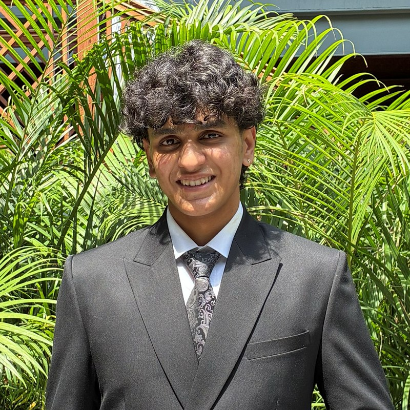

Hi, I'm Surya Vamshi S.
Product & Operations Builder
Co-founder of Socio, an institutional event-management platform tested at university scale, alongside two further systems built for Christ University under live operational conditions. My work spans product strategy, stakeholder engagement, and full-stack engineering.

Professional Profile
I am a BCA graduate of Christ University, Bengaluru (2023–2026), and co-founder of Socio. My work spans product strategy, stakeholder engagement, and full-stack engineering, with a consistent focus on building institutional systems and remaining closely involved through their deployment and operational support.
Alongside my product work, I have five years of leadership experience with the National Cadet Corps, including service on Christ University's convocation organizing and execution team for three consecutive years (6,000+ graduates annually) and leadership of the Sports Day band for two years. I currently serve on the Student Council (2025–26) and the Daksh event organizing committee, and have supported admissions operations covering 16,000+ applicants.
Coursework: Data Structures & Algorithms, Database Management, Web Development, Cloud Computing. Languages: English, Kannada, Telugu, Hindi — currently learning German.
Case studies
Three systems built for Christ University, Bengaluru, each replacing a manual, paper- or spreadsheet-based process with a structured digital workflow. Two independently encountered the same scaling failure under live load, and in both cases the fix was deployed the same day.
Socio — An Event Management Platform
An institutional event-management platform shaped by 200+ student interviews, covering multi-stage approval workflows, QR-based attendance, and role-specific analytics. Tested across ten live events, including a production incident diagnosed and resolved the same day.
Read the full case study →Gated — A Smart Visitor Management System
A QR-based visitor management system built for Christ University's DAKSH / Open Day (December 2–3, 2025), replacing manual check-in with real-time registration, verification, and attendance analytics.
Read the full case study →Auth — Admissions Workflow Management Platform
A QR-checkpoint system for university interview-day admissions, built and tested end-to-end with real applicant data. Development was completed; live rollout was deferred due to hardware procurement constraints, not product limitations.
Read the full case study →Skills
Product Strategy
Roadmapping, prioritization, and MVP planning for institutional products
Stakeholder Management
Negotiating requirements across university leadership, IT, and faculty
Workflow Design
Multi-stage approval chains and operational process design
Customer Discovery
200+ user interviews translated directly into product decisions
Full-Stack Development
React, Next.js, and Node.js (Express) across three shipped products
Database Management
SQL and NoSQL — PostgreSQL, Supabase, MySQL, MongoDB
Cloud & Deployment
AWS Certified Cloud Practitioner; shipped on Vercel
REST APIs
Designing and integrating APIs across QR, SMS, and messaging flows
Data Analysis
Python and Pandas for operational and participation data
Pilot Deployment
Live-event rollout and on-the-day incident response
Process Improvement
Diagnosing and fixing scaling bottlenecks under real load
Cross-Functional Execution
Coordinating product, engineering, and institutional stakeholders at once
Before these builds, and alongside them
- 2024Led admissions operations supporting 16,000+ applicants; directed 100+ NCC cadets across logistics and on-ground execution.
- 2022–25NCC Cadet (Corporal) — part of the convocation organizing & execution team for 3 consecutive years, a 3-day event graduating 6,000+ students each year. Led the Sports Day band for 2 years.
- 2024–25Student Welfare Office — records management, plus negotiations that secured Rs. 2 lakh in cash sponsorship from The Bear House for InBlooms 2025.
- 2025–26Student Council member — student-welfare initiatives and the Daksh event organizing committee.